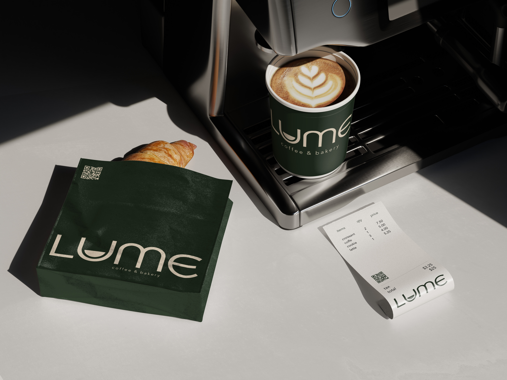

Brand identity · Campaign
LUME coffee & bakery
A warm, welcoming identity for a neighbourhood café, translated into packaging, in-store touchpoints and launch imagery.

Concept
LUME is all about slow mornings, soft light and beautifully made coffee. The visual identity needed to feel calm and confident, with enough character to stand out in a crowded café scene. The logo system uses generous curves and a custom wordmark that feels contemporary but approachable.
The deep green and warm cream palette pairs with tactile printed materials to echo the richness of espresso and the softness of pastry. Photography is treated as part of the brand language, focusing on simple compositions and everyday rituals.
Details
The project included takeaway cups, pastry bags, receipts and café signage. Each touchpoint carries the LUME mark in slightly different scales, creating a flexible but coherent system that still looks good when photographed and shared online.